European News Dashboard
Daily view
Last update: 12 May 2026, 00:14 CEST
🇮🇹 Italy — 12 May 2026
Updated: 12 May 2026, 00:14 CESTWordcloud

Top 10 unigrams
| Term | Frequency |
|---|---|
| procedura | 1 |
| hantavirus | 1 |
| positivo | 1 |
Top 10 phrases
No phrases found for this day.
Top 10 new terms (not present on previous day)
| Term | Current day frequency |
|---|---|
| procedura | 1 |
Top 10 increasing terms (vs previous day)
No significantly increasing terms.
Top 10 decreasing terms (vs previous day)
| Term | Difference | Current day frequency | Previous day frequency |
|---|---|---|---|
| positivo | -5 | 1 | 6 |
| hantavirus | -3 | 1 | 4 |
🇬🇧 UK — 12 May 2026
Updated: 12 May 2026, 00:14 CESTWordcloud

Top 10 unigrams
| Term | Frequency |
|---|---|
| mps | 3 |
| minister | 3 |
| politic | 2 |
| rebellion | 2 |
| speech | 2 |
| award | 2 |
| prize | 2 |
| freedom | 2 |
| pressure | 1 |
| aide | 1 |
Top 10 phrases
| Term | Frequency |
|---|---|
| keir starmer resignation | 2 |
| senior cabinet ministers | 2 |
| keir starmers | 2 |
| sarah wynn williams | 2 |
| virginia giuffre | 2 |
| book awards | 2 |
Top 10 new terms (not present on previous day)
| Term | Current day frequency |
|---|---|
| mps | 3 |
| virginia giuffre | 2 |
| award | 2 |
| sarah wynn williams | 2 |
| book awards | 2 |
| senior cabinet ministers | 2 |
| prize | 2 |
| freedom | 2 |
| tonight | 1 |
| news | 1 |
Top 10 increasing terms (vs previous day)
| Term | Difference | Current day frequency | Previous day frequency |
|---|---|---|---|
| minister | 1 | 3 | 2 |
Top 10 decreasing terms (vs previous day)
| Term | Difference | Current day frequency | Previous day frequency |
|---|---|---|---|
| politic | -2 | 2 | 4 |
| aide | -2 | 1 | 3 |
| voter | -2 | 1 | 3 |
| keir starmers | -1 | 2 | 3 |
| speech | -1 | 2 | 3 |
🇮🇹 Italy — 11 May 2026
Updated: 12 May 2026, 00:14 CESTWordcloud

Top 10 unigrams
| Term | Frequency |
|---|---|
| positivo | 6 |
| usa | 6 |
| ucraina | 6 |
| giuli | 5 |
| sanzione | 5 |
| americano | 4 |
| meloni | 4 |
| colono | 4 |
| starmer | 4 |
| hantavirus | 4 |
Top 10 phrases
| Term | Frequency |
|---|---|
| mv hondius | 2 |
| crans montana | 2 |
| positivi passeggera francese | 2 |
| arrivo circolare | 2 |
Top 10 new terms (not present on previous day)
| Term | Current day frequency |
|---|---|
| positivo | 6 |
| sanzione | 5 |
| kallas | 4 |
| colono | 4 |
| americano | 4 |
| ministero | 3 |
| pellegrino | 3 |
| russia | 3 |
| cittadino | 3 |
| negoziatore | 3 |
Top 10 increasing terms (vs previous day)
| Term | Difference | Current day frequency | Previous day frequency |
|---|---|---|---|
| ucraina | 3 | 6 | 3 |
| hantavirus | 2 | 4 | 2 |
| sempio | 2 | 3 | 1 |
| fuoco | 2 | 3 | 1 |
| starmer | 2 | 4 | 2 |
| crisi | 2 | 3 | 1 |
| vertice | 2 | 3 | 1 |
| giuli | 1 | 5 | 4 |
| europa | 1 | 3 | 2 |
| cuore | 1 | 2 | 1 |
Top 10 decreasing terms (vs previous day)
| Term | Difference | Current day frequency | Previous day frequency |
|---|---|---|---|
| nave | -8 | 2 | 10 |
| guerra | -6 | 1 | 7 |
| iran | -5 | 2 | 7 |
| trump | -2 | 2 | 4 |
| attentato | -1 | 2 | 3 |
| dirigente | -1 | 1 | 2 |
| mosca | -1 | 3 | 4 |
| bordo | -1 | 1 | 2 |
| milione | -1 | 1 | 2 |
| fine | -1 | 1 | 2 |
🇬🇧 UK — 11 May 2026
Updated: 12 May 2026, 00:14 CESTWordcloud

Top 10 unigrams
| Term | Frequency |
|---|---|
| starmer | 18 |
| iran | 12 |
| trump | 11 |
| labour | 8 |
| passenger | 7 |
| ship | 6 |
| call | 5 |
| pupil | 4 |
| release | 4 |
| rule | 4 |
Top 10 phrases
| Term | Frequency |
|---|---|
| life support | 4 |
| middle east | 3 |
| leadership challenge | 3 |
| british steel | 3 |
| reform councillor | 3 |
| attempted murder | 3 |
| ministerial aides | 3 |
| keir starmers | 3 |
| savannah guthrie | 2 |
| iran ceasefire | 2 |
Top 10 new terms (not present on previous day)
| Term | Current day frequency |
|---|---|
| ship | 6 |
| rule | 4 |
| release | 4 |
| pupil | 4 |
| plan | 3 |
| ofcom | 3 |
| court | 3 |
| ministerial aides | 3 |
| reform councillor | 3 |
| attempted murder | 3 |
Top 10 increasing terms (vs previous day)
| Term | Difference | Current day frequency | Previous day frequency |
|---|---|---|---|
| starmer | 9 | 18 | 9 |
| trump | 6 | 11 | 5 |
| passenger | 4 | 7 | 3 |
| call | 4 | 5 | 1 |
| voter | 2 | 3 | 1 |
| police | 2 | 3 | 1 |
| iran | 2 | 12 | 10 |
| china | 2 | 4 | 2 |
| life support | 2 | 4 | 2 |
| fear | 2 | 3 | 1 |
Top 10 decreasing terms (vs previous day)
| Term | Difference | Current day frequency | Previous day frequency |
|---|---|---|---|
| body | -4 | 1 | 5 |
| labour | -2 | 8 | 10 |
| antisemitism | -2 | 1 | 3 |
| rayner | -2 | 2 | 4 |
| datum | -1 | 1 | 2 |
| migrant | -1 | 1 | 2 |
| picture | -1 | 1 | 2 |
| fan | -1 | 1 | 2 |
| bbc | -1 | 2 | 3 |
| minister | -1 | 2 | 3 |
🇮🇹 Italy — 10 May 2026
Updated: 12 May 2026, 00:14 CESTWordcloud

Top 10 unigrams
| Term | Frequency |
|---|---|
| nave | 10 |
| guerra | 7 |
| tenerife | 7 |
| iran | 7 |
| madre | 6 |
| usa | 5 |
| trump | 4 |
| giuli | 4 |
| mosca | 4 |
| festa | 3 |
Top 10 phrases
| Term | Frequency |
|---|---|
| serie a | 3 |
| cittadino francese | 2 |
| ministero della cultura | 2 |
| mv hondius | 2 |
| gerhard schroeder storia ex cancelliere amico putin | 2 |
Top 10 new terms (not present on previous day)
| Term | Current day frequency |
|---|---|
| nave | 10 |
| tenerife | 7 |
| madre | 6 |
| giuli | 4 |
| attentato | 3 |
| serie a | 3 |
| via | 3 |
| europa | 2 |
| ministero della cultura | 2 |
| contagio | 2 |
Top 10 increasing terms (vs previous day)
| Term | Difference | Current day frequency | Previous day frequency |
|---|---|---|---|
| iran | 2 | 7 | 5 |
| giro | 2 | 3 | 1 |
| risposta | 2 | 3 | 1 |
| guerra | 2 | 7 | 5 |
| hormuz | 1 | 2 | 1 |
| papa | 1 | 2 | 1 |
| starmer | 1 | 2 | 1 |
| sfida | 1 | 2 | 1 |
| conte | 1 | 2 | 1 |
| bordo | 1 | 2 | 1 |
Top 10 decreasing terms (vs previous day)
| Term | Difference | Current day frequency | Previous day frequency |
|---|---|---|---|
| trump | -4 | 4 | 8 |
| hantavirus | -3 | 2 | 5 |
| conflitto | -3 | 1 | 4 |
| ucraina | -2 | 3 | 5 |
| volo | -2 | 1 | 3 |
| passeggero | -2 | 1 | 3 |
| sempio | -2 | 1 | 3 |
| mattarella | -2 | 1 | 3 |
| anno | -1 | 2 | 3 |
| mosca | -1 | 4 | 5 |
🇬🇧 UK — 10 May 2026
Updated: 12 May 2026, 00:14 CESTWordcloud

Top 10 unigrams
| Term | Frequency |
|---|---|
| iran | 10 |
| labour | 10 |
| starmer | 9 |
| result | 7 |
| hantavirus | 6 |
| body | 5 |
| trump | 5 |
| ceasefire | 4 |
| london | 4 |
| tories | 4 |
Top 10 phrases
| Term | Frequency |
|---|---|
| keir starmer | 6 |
| former synagogue | 5 |
| arson attack | 4 |
| catherine west | 4 |
| angela rayners | 4 |
| bafta tv awards | 3 |
| cup ticket prices | 3 |
| tristan da cunha | 3 |
| pressure mounts | 3 |
| angela rayner | 3 |
Top 10 new terms (not present on previous day)
| Term | Current day frequency |
|---|---|
| hantavirus | 6 |
| keir starmer | 6 |
| former synagogue | 5 |
| trump | 5 |
| ceasefire | 4 |
| catherine west | 4 |
| tories | 4 |
| rayner | 4 |
| angela rayners | 4 |
| arson attack | 4 |
Top 10 increasing terms (vs previous day)
| Term | Difference | Current day frequency | Previous day frequency |
|---|---|---|---|
| iran | 4 | 10 | 6 |
| body | 3 | 5 | 2 |
| ukraine | 2 | 4 | 2 |
| thousand | 2 | 3 | 1 |
| threat | 2 | 3 | 1 |
| passenger | 2 | 3 | 1 |
| australia | 1 | 3 | 2 |
| fight | 1 | 2 | 1 |
| record | 1 | 2 | 1 |
| russia | 1 | 3 | 2 |
Top 10 decreasing terms (vs previous day)
| Term | Difference | Current day frequency | Previous day frequency |
|---|---|---|---|
| labour | -11 | 10 | 21 |
| reform | -8 | 2 | 10 |
| starmer | -4 | 9 | 13 |
| labour mp | -4 | 2 | 6 |
| result | -3 | 7 | 10 |
| control | -2 | 1 | 3 |
| china | -2 | 2 | 4 |
| politic | -1 | 3 | 4 |
| greens | -1 | 2 | 3 |
| country | -1 | 1 | 2 |
🇮🇹 Italy — 09 May 2026
Updated: 12 May 2026, 00:14 CESTWordcloud

Top 10 unigrams
| Term | Frequency |
|---|---|
| putin | 10 |
| trump | 8 |
| guerra | 5 |
| hantavirus | 5 |
| mosca | 5 |
| ucraina | 5 |
| usa | 5 |
| iran | 5 |
| premier | 4 |
| conflitto | 4 |
Top 10 phrases
| Term | Frequency |
|---|---|
| unione europea | 2 |
| piazza rossa | 2 |
| fondi pubblici | 2 |
| repubblica dominicana | 2 |
| ogni giorno | 2 |
| dialogo franco | 2 |
| stato usa | 2 |
Top 10 new terms (not present on previous day)
| Term | Current day frequency |
|---|---|
| putin | 10 |
| roma | 4 |
| conflitto | 4 |
| termine | 3 |
| truppa | 3 |
| israele | 3 |
| meloni | 3 |
| ministero | 3 |
| ungheria | 3 |
| garlasco | 3 |
Top 10 increasing terms (vs previous day)
| Term | Difference | Current day frequency | Previous day frequency |
|---|---|---|---|
| trump | 6 | 8 | 2 |
| hantavirus | 3 | 5 | 2 |
| mattarella | 2 | 3 | 1 |
| ucraina | 2 | 5 | 3 |
| guerra | 2 | 5 | 3 |
| segreto | 2 | 3 | 1 |
| passeggero | 2 | 3 | 1 |
| mosca | 2 | 5 | 3 |
| vittima | 1 | 2 | 1 |
| pronto | 1 | 2 | 1 |
Top 10 decreasing terms (vs previous day)
| Term | Difference | Current day frequency | Previous day frequency |
|---|---|---|---|
| usa | -9 | 5 | 14 |
| rubio | -6 | 1 | 7 |
| papa | -5 | 1 | 6 |
| interesse | -3 | 1 | 4 |
| primo | -3 | 2 | 5 |
| disgelo | -3 | 1 | 4 |
| euro | -2 | 1 | 3 |
| documento | -2 | 2 | 4 |
| maggio | -2 | 1 | 3 |
| russo | -1 | 1 | 2 |
🇬🇧 UK — 09 May 2026
Updated: 12 May 2026, 00:14 CESTWordcloud

Top 10 unigrams
| Term | Frequency |
|---|---|
| labour | 21 |
| starmer | 13 |
| reform | 10 |
| result | 10 |
| monday | 7 |
| gain | 7 |
| snp | 7 |
| iran | 6 |
| car | 5 |
| london | 5 |
Top 10 phrases
| Term | Frequency |
|---|---|
| labour mp | 6 |
| john swinney | 4 |
| election results | 4 |
| challenge starmer | 3 |
| nottinghamshire town | 3 |
| plaid cymru | 3 |
| town centre | 3 |
| scaled victory parade | 3 |
| election battering | 2 |
| labour mps | 2 |
Top 10 new terms (not present on previous day)
| Term | Current day frequency |
|---|---|
| monday | 7 |
| labour mp | 6 |
| cabinet | 4 |
| putin | 4 |
| tiktok | 4 |
| challenge starmer | 3 |
| town centre | 3 |
| explosive | 3 |
| control | 3 |
| greece | 3 |
Top 10 increasing terms (vs previous day)
| Term | Difference | Current day frequency | Previous day frequency |
|---|---|---|---|
| reform | 5 | 10 | 5 |
| starmer | 5 | 13 | 8 |
| snp | 4 | 7 | 3 |
| car | 3 | 5 | 2 |
| china | 2 | 4 | 2 |
| strait | 2 | 3 | 1 |
| vote | 2 | 4 | 2 |
| labour | 2 | 21 | 19 |
| london | 2 | 5 | 3 |
| john swinney | 2 | 4 | 2 |
Top 10 decreasing terms (vs previous day)
| Term | Difference | Current day frequency | Previous day frequency |
|---|---|---|---|
| result | -17 | 10 | 27 |
| election results | -7 | 4 | 11 |
| politic | -4 | 4 | 8 |
| map | -4 | 1 | 5 |
| loss | -4 | 4 | 8 |
| iran | -4 | 6 | 10 |
| court | -4 | 1 | 5 |
| wales | -3 | 2 | 5 |
| thousand | -3 | 1 | 4 |
| chart | -3 | 1 | 4 |
🇮🇹 Italy — 08 May 2026
Updated: 12 May 2026, 00:14 CESTWordcloud

Top 10 unigrams
| Term | Frequency |
|---|---|
| usa | 14 |
| rubio | 7 |
| papa | 6 |
| iran | 6 |
| primo | 5 |
| premier | 4 |
| caso | 4 |
| anno | 4 |
| interesse | 4 |
| documento | 4 |
Top 10 phrases
| Term | Frequency |
|---|---|
| palazzo chigi | 5 |
| gran bretagna | 3 |
| meloni rubio | 3 |
| stretto di hormuz | 3 |
| dialogo franco | 2 |
| interessi nazionali | 2 |
Top 10 new terms (not present on previous day)
| Term | Current day frequency |
|---|---|
| palazzo chigi | 5 |
| primo | 5 |
| interesse | 4 |
| colloquio | 4 |
| documento | 4 |
| premier | 4 |
| disgelo | 4 |
| mezzo | 3 |
| meloni rubio | 3 |
| stretto di hormuz | 3 |
Top 10 increasing terms (vs previous day)
| Term | Difference | Current day frequency | Previous day frequency |
|---|---|---|---|
| usa | 11 | 14 | 3 |
| rubio | 5 | 7 | 2 |
| pubblico | 3 | 4 | 1 |
| papa | 2 | 6 | 4 |
| maggio | 2 | 3 | 1 |
| focus | 1 | 2 | 1 |
| mosca | 1 | 3 | 2 |
| appello | 1 | 2 | 1 |
| tajani | 1 | 2 | 1 |
| iran | 1 | 6 | 5 |
Top 10 decreasing terms (vs previous day)
| Term | Difference | Current day frequency | Previous day frequency |
|---|---|---|---|
| nave | -5 | 3 | 8 |
| europa | -3 | 4 | 7 |
| mattarella | -3 | 1 | 4 |
| hondius | -3 | 2 | 5 |
| passeggero | -3 | 1 | 4 |
| crociera | -3 | 1 | 4 |
| politica | -2 | 1 | 3 |
| hantavirus | -2 | 2 | 4 |
| pace | -2 | 2 | 4 |
| trump | -2 | 2 | 4 |
🇬🇧 UK — 08 May 2026
Updated: 12 May 2026, 00:14 CESTWordcloud

Top 10 unigrams
| Term | Frequency |
|---|---|
| result | 27 |
| labour | 19 |
| iran | 10 |
| gain | 9 |
| politic | 8 |
| loss | 8 |
| starmer | 8 |
| map | 5 |
| court | 5 |
| trump | 5 |
Top 10 phrases
| Term | Frequency |
|---|---|
| election results | 11 |
| andrew mountbatten windsor | 6 |
| local elections | 6 |
| council elections | 4 |
| iran war | 3 |
| historic shift | 3 |
| reform election gains | 3 |
| reform gains | 3 |
| john curtice | 3 |
| nigel farage | 3 |
Top 10 new terms (not present on previous day)
| Term | Current day frequency |
|---|---|
| election results | 11 |
| politic | 8 |
| loss | 8 |
| andrew mountbatten windsor | 6 |
| reform | 5 |
| map | 5 |
| chart | 4 |
| council elections | 4 |
| senedd | 4 |
| thousand | 4 |
Top 10 increasing terms (vs previous day)
| Term | Difference | Current day frequency | Previous day frequency |
|---|---|---|---|
| result | 24 | 27 | 3 |
| labour | 17 | 19 | 2 |
| gain | 8 | 9 | 1 |
| starmer | 7 | 8 | 1 |
| greens | 3 | 4 | 1 |
| europe | 2 | 4 | 2 |
| iran war | 1 | 3 | 2 |
| government | 1 | 2 | 1 |
| wall | 1 | 2 | 1 |
| pressure | 1 | 2 | 1 |
Top 10 decreasing terms (vs previous day)
| Term | Difference | Current day frequency | Previous day frequency |
|---|---|---|---|
| scotland | -3 | 3 | 6 |
| ukraine | -2 | 2 | 4 |
| rape | -2 | 1 | 3 |
| voter | -2 | 2 | 4 |
| china | -1 | 2 | 3 |
| family | -1 | 1 | 2 |
| jewish | -1 | 2 | 3 |
| vote | -1 | 2 | 3 |
| history | -1 | 1 | 2 |
| boss | -1 | 1 | 2 |
🇮🇹 Italy — 07 May 2026
Updated: 12 May 2026, 00:14 CESTWordcloud

Top 10 unigrams
| Term | Frequency |
|---|---|
| nave | 8 |
| roma | 8 |
| europa | 7 |
| hondius | 5 |
| iran | 5 |
| papa | 4 |
| pace | 4 |
| trump | 4 |
| mattarella | 4 |
| passeggero | 4 |
Top 10 phrases
| Term | Frequency |
|---|---|
| corte ue | 3 |
| santa sede | 2 |
| relazioni solide | 2 |
| nessuna indulgenza | 2 |
| chiara poggi | 2 |
| gianni cervetti | 2 |
| casa bianca | 2 |
| elezioni locali | 2 |
| istituzioni europee | 2 |
| lue pi | 1 |
Top 10 new terms (not present on previous day)
| Term | Current day frequency |
|---|---|
| europa | 7 |
| hondius | 5 |
| epstein | 3 |
| politica | 3 |
| razzo | 3 |
| starmer | 3 |
| corte ue | 3 |
| europeo | 3 |
| discriminatorio | 3 |
| leone | 3 |
Top 10 increasing terms (vs previous day)
| Term | Difference | Current day frequency | Previous day frequency |
|---|---|---|---|
| roma | 6 | 8 | 2 |
| ministro | 2 | 3 | 1 |
| miliardo | 2 | 3 | 1 |
| mattarella | 2 | 4 | 2 |
| milione | 2 | 3 | 1 |
| passeggero | 2 | 4 | 2 |
| punto | 2 | 3 | 1 |
| notizia | 1 | 2 | 1 |
| pace | 1 | 4 | 3 |
| nave | 1 | 8 | 7 |
Top 10 decreasing terms (vs previous day)
| Term | Difference | Current day frequency | Previous day frequency |
|---|---|---|---|
| trump | -7 | 4 | 11 |
| anno | -6 | 3 | 9 |
| scuola | -3 | 1 | 4 |
| meloni | -3 | 3 | 6 |
| immagine | -2 | 1 | 3 |
| usa | -2 | 3 | 5 |
| hantavirus | -2 | 4 | 6 |
| sempio | -1 | 2 | 3 |
| mosca | -1 | 2 | 3 |
| usa-iran | -1 | 1 | 2 |
🇬🇧 UK — 07 May 2026
Updated: 12 May 2026, 00:14 CESTWordcloud

Top 10 unigrams
| Term | Frequency |
|---|---|
| iran | 9 |
| wales | 6 |
| scotland | 6 |
| australia | 5 |
| superdry | 4 |
| plan | 4 |
| fame | 4 |
| court | 4 |
| party | 4 |
| voter | 4 |
Top 10 phrases
| Term | Frequency |
|---|---|
| local elections | 6 |
| james holder | 5 |
| ukraine war | 4 |
| founder james holder | 4 |
| morgan mcsweeneys | 4 |
| polling stations | 3 |
| ian watkins | 3 |
| health agency | 2 |
| cruise ship | 2 |
| russia victory parade | 2 |
Top 10 new terms (not present on previous day)
| Term | Current day frequency |
|---|---|
| scotland | 6 |
| australia | 5 |
| james holder | 5 |
| right | 4 |
| morgan mcsweeneys | 4 |
| founder james holder | 4 |
| fame | 4 |
| superdry | 4 |
| ukraine war | 4 |
| talk | 3 |
Top 10 increasing terms (vs previous day)
| Term | Difference | Current day frequency | Previous day frequency |
|---|---|---|---|
| wales | 3 | 6 | 3 |
| poll | 3 | 4 | 1 |
| voter | 2 | 4 | 2 |
| result | 2 | 3 | 1 |
| hand | 2 | 3 | 1 |
| vote | 2 | 3 | 1 |
| trial | 1 | 3 | 2 |
| antisemitism | 1 | 2 | 1 |
| hope | 1 | 2 | 1 |
| jewish | 1 | 3 | 2 |
Top 10 decreasing terms (vs previous day)
| Term | Difference | Current day frequency | Previous day frequency |
|---|---|---|---|
| trump | -5 | 4 | 9 |
| starmer | -4 | 1 | 5 |
| labour | -3 | 2 | 5 |
| local elections | -3 | 6 | 9 |
| deal | -3 | 1 | 4 |
| greens | -2 | 1 | 3 |
| price | -2 | 1 | 3 |
| family | -2 | 2 | 4 |
| iran | -2 | 9 | 11 |
| child | -2 | 1 | 3 |
🇮🇹 Italy — 06 May 2026
Updated: 12 May 2026, 00:14 CESTWordcloud

Top 10 unigrams
| Term | Frequency |
|---|---|
| trump | 11 |
| anno | 9 |
| nave | 7 |
| meloni | 6 |
| hantavirus | 6 |
| iran | 6 |
| mostra | 5 |
| cnn | 5 |
| usa | 5 |
| caso | 4 |
Top 10 phrases
| Term | Frequency |
|---|---|
| ted turner | 3 |
| leone xiv | 3 |
| paolo massa | 3 |
| assemblea costituente | 3 |
| marco poggi | 2 |
| reggio calabria | 2 |
| project freedom | 2 |
| aldo moro | 2 |
| giudici belgi | 2 |
| iran usa | 2 |
Top 10 new terms (not present on previous day)
| Term | Current day frequency |
|---|---|
| nave | 7 |
| mostra | 5 |
| cnn | 5 |
| crociera | 4 |
| hormuz | 4 |
| scuola | 4 |
| papa | 4 |
| lega | 3 |
| principessa | 3 |
| minetti | 3 |
Top 10 increasing terms (vs previous day)
| Term | Difference | Current day frequency | Previous day frequency |
|---|---|---|---|
| anno | 6 | 9 | 3 |
| iran | 3 | 6 | 3 |
| russo | 3 | 4 | 1 |
| meloni | 3 | 6 | 3 |
| biennale | 2 | 4 | 2 |
| pace | 2 | 3 | 1 |
| usa | 2 | 5 | 3 |
| primo | 1 | 3 | 2 |
| ferito | 1 | 2 | 1 |
| sempio | 1 | 3 | 2 |
Top 10 decreasing terms (vs previous day)
| Term | Difference | Current day frequency | Previous day frequency |
|---|---|---|---|
| morto | -5 | 2 | 7 |
| cattolico | -5 | 1 | 6 |
| pericolo | -4 | 1 | 5 |
| attacco | -4 | 1 | 5 |
| uomo | -3 | 1 | 4 |
| guerra | -2 | 2 | 4 |
| fuoco | -2 | 4 | 6 |
| governo | -2 | 1 | 3 |
| venezia | -2 | 2 | 4 |
| carcere | -2 | 1 | 3 |
🇬🇧 UK — 06 May 2026
Updated: 12 May 2026, 00:14 CESTWordcloud

Top 10 unigrams
| Term | Frequency |
|---|---|
| election | 15 |
| iran | 11 |
| trump | 9 |
| plan | 5 |
| cnn | 5 |
| ukraine | 5 |
| labour | 5 |
| starmer | 5 |
| deal | 4 |
| court | 4 |
Top 10 phrases
| Term | Frequency |
|---|---|
| local elections | 9 |
| oil prices | 3 |
| ted turner | 3 |
| north korea | 3 |
| young men | 3 |
| middle east | 3 |
| alaska megatsunami | 2 |
| political parties | 2 |
| final pitches | 2 |
| iran war | 2 |
Top 10 new terms (not present on previous day)
| Term | Current day frequency |
|---|---|
| ukraine | 5 |
| cnn | 5 |
| family | 4 |
| court | 4 |
| death | 4 |
| megatsunami | 4 |
| young men | 3 |
| oil prices | 3 |
| snp | 3 |
| ted turner | 3 |
Top 10 increasing terms (vs previous day)
| Term | Difference | Current day frequency | Previous day frequency |
|---|---|---|---|
| election | 10 | 15 | 5 |
| trump | 7 | 9 | 2 |
| local elections | 7 | 9 | 2 |
| plan | 4 | 5 | 1 |
| hormuz | 2 | 3 | 1 |
| party | 2 | 3 | 1 |
| deal | 2 | 4 | 2 |
| reform | 2 | 4 | 2 |
| starmer | 2 | 5 | 3 |
| concern | 2 | 3 | 1 |
Top 10 decreasing terms (vs previous day)
| Term | Difference | Current day frequency | Previous day frequency |
|---|---|---|---|
| job | -3 | 1 | 4 |
| iran war | -2 | 2 | 4 |
| school | -2 | 1 | 3 |
| antisemitism | -1 | 1 | 2 |
| cost | -1 | 2 | 3 |
| passenger | -1 | 2 | 3 |
| victim | -1 | 1 | 2 |
| labour | -1 | 5 | 6 |
| line | -1 | 1 | 2 |
| use | -1 | 1 | 2 |
🇮🇹 Italy — 05 May 2026
Updated: 12 May 2026, 00:14 CESTWordcloud
Top 10 unigrams
| Term | Frequency |
|---|---|
| trump | 11 |
| morto | 7 |
| hantavirus | 7 |
| fuoco | 6 |
| cattolico | 6 |
| pericolo | 5 |
| attacco | 5 |
| guerra | 4 |
| uomo | 4 |
| oms | 4 |
Top 10 phrases
| Term | Frequency |
|---|---|
| molti cattolici | 4 |
| possibile trasmissione | 2 |
| nave crociera | 2 |
| israele proroga giorni | 2 |
| papa leone | 2 |
| met gala | 2 |
Top 10 new terms (not present on previous day)
| Term | Current day frequency |
|---|---|
| fuoco | 6 |
| pericolo | 5 |
| molti cattolici | 4 |
| oms | 4 |
| carcere | 3 |
| parolin | 3 |
| israele | 3 |
| romania | 3 |
| flotilla | 3 |
| artificio | 3 |
Top 10 increasing terms (vs previous day)
| Term | Difference | Current day frequency | Previous day frequency |
|---|---|---|---|
| cattolico | 5 | 6 | 1 |
| attacco | 4 | 5 | 1 |
| hantavirus | 4 | 7 | 3 |
| trump | 3 | 11 | 8 |
| uomo | 3 | 4 | 1 |
| governo | 2 | 3 | 1 |
| stella | 1 | 2 | 1 |
| sicurezza | 1 | 2 | 1 |
| ragazzo | 1 | 2 | 1 |
| europa | 1 | 3 | 2 |
Top 10 decreasing terms (vs previous day)
| Term | Difference | Current day frequency | Previous day frequency |
|---|---|---|---|
| usa | -11 | 3 | 14 |
| iran | -7 | 3 | 10 |
| meloni | -7 | 3 | 10 |
| ferito | -6 | 1 | 7 |
| auto | -6 | 1 | 7 |
| folla | -5 | 2 | 7 |
| morto | -5 | 7 | 12 |
| armenia | -3 | 3 | 6 |
| putin | -3 | 1 | 4 |
| mattarella | -2 | 3 | 5 |
🇬🇧 UK — 05 May 2026
Updated: 12 May 2026, 00:14 CESTWordcloud
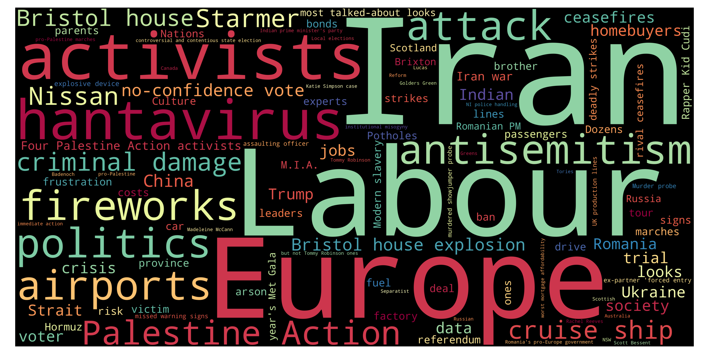
Top 10 unigrams
| Term | Frequency |
|---|---|
| iran | 11 |
| police | 7 |
| labour | 6 |
| election | 5 |
| activist | 4 |
| job | 4 |
| ceasefire | 4 |
| airport | 4 |
| russian | 4 |
| israeli | 4 |
Top 10 phrases
| Term | Frequency |
|---|---|
| palestine action | 6 |
| criminal damage | 4 |
| iran war | 4 |
| ex partner forced entry | 3 |
| cruise ship | 3 |
| confidence vote | 3 |
| four palestine action activists | 3 |
| former synagogue | 3 |
| east london | 3 |
| antisemitic attacks | 2 |
Top 10 new terms (not present on previous day)
| Term | Current day frequency |
|---|---|
| police | 7 |
| palestine action | 6 |
| labour | 6 |
| criminal damage | 4 |
| airport | 4 |
| iran war | 4 |
| canada | 4 |
| job | 4 |
| four palestine action activists | 3 |
| romania | 3 |
Top 10 increasing terms (vs previous day)
| Term | Difference | Current day frequency | Previous day frequency |
|---|---|---|---|
| iran | 7 | 11 | 4 |
| ceasefire | 3 | 4 | 1 |
| election | 3 | 5 | 2 |
| activist | 2 | 4 | 2 |
| passenger | 2 | 3 | 1 |
| parent | 1 | 2 | 1 |
| cost | 1 | 3 | 2 |
| life | 1 | 2 | 1 |
| antisemitism | 1 | 2 | 1 |
| israeli | 1 | 4 | 3 |
Top 10 decreasing terms (vs previous day)
| Term | Difference | Current day frequency | Previous day frequency |
|---|---|---|---|
| reform | -6 | 2 | 8 |
| hormuz | -4 | 1 | 5 |
| trump | -3 | 2 | 5 |
| starmer | -2 | 3 | 5 |
| thousand | -2 | 1 | 3 |
| leader | -1 | 2 | 3 |
| pupil | -1 | 1 | 2 |
| politic | -1 | 1 | 2 |
| strait | -1 | 2 | 3 |
| russian | -1 | 4 | 5 |
🇮🇹 Italy — 04 May 2026
Updated: 12 May 2026, 00:14 CESTWordcloud
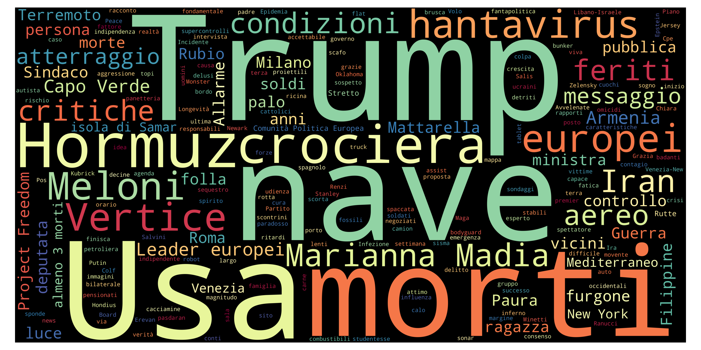
Top 10 unigrams
| Term | Frequency |
|---|---|
| usa | 14 |
| morto | 12 |
| meloni | 10 |
| iran | 10 |
| trump | 8 |
| ferito | 7 |
| auto | 7 |
| folla | 7 |
| lipsia | 7 |
| hormuz | 7 |
Top 10 phrases
| Term | Frequency |
|---|---|
| almeno morti | 5 |
| marianna madia | 4 |
| comunità politica europea | 3 |
| casa bianca | 2 |
| pubblicità pubblica | 2 |
| leader europei | 2 |
| rudy giuliani | 2 |
| new york | 2 |
| capo verde | 2 |
| nave sudcoreana | 2 |
Top 10 new terms (not present on previous day)
| Term | Current day frequency |
|---|---|
| auto | 7 |
| ferito | 7 |
| folla | 7 |
| lipsia | 7 |
| armenia | 6 |
| almeno morti | 5 |
| mattarella | 5 |
| marianna madia | 4 |
| venezia | 4 |
| atterraggio | 3 |
Top 10 increasing terms (vs previous day)
| Term | Difference | Current day frequency | Previous day frequency |
|---|---|---|---|
| morto | 9 | 12 | 3 |
| meloni | 9 | 10 | 1 |
| usa | 6 | 14 | 8 |
| trump | 6 | 8 | 2 |
| hormuz | 6 | 7 | 1 |
| putin | 3 | 4 | 1 |
| iran | 3 | 10 | 7 |
| crisi | 2 | 3 | 1 |
| crociera | 2 | 5 | 3 |
| vertice | 2 | 3 | 1 |
Top 10 decreasing terms (vs previous day)
| Term | Difference | Current day frequency | Previous day frequency |
|---|---|---|---|
| maggio | -5 | 1 | 6 |
| roma | -5 | 3 | 8 |
| papa | -2 | 2 | 4 |
| giorno | -2 | 2 | 4 |
| attacco | -1 | 1 | 2 |
| rubio | -1 | 2 | 3 |
| primo | -1 | 1 | 2 |
| presidente | -1 | 1 | 2 |
| teheran | -1 | 2 | 3 |
| anno | -1 | 2 | 3 |
🇬🇧 UK — 04 May 2026
Updated: 12 May 2026, 00:14 CESTWordcloud
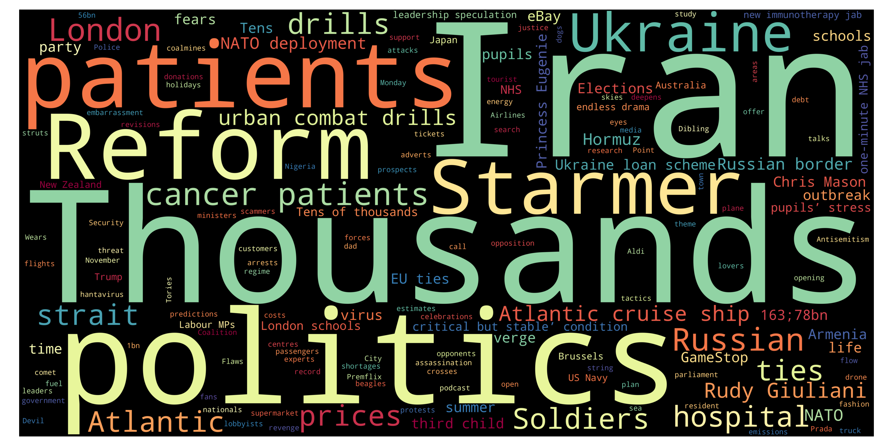
Top 10 unigrams
| Term | Frequency |
|---|---|
| reform | 8 |
| centre | 5 |
| area | 5 |
| starmer | 5 |
| trump | 5 |
| russian | 5 |
| ebay | 5 |
| hormuz | 5 |
| study | 4 |
| gamestop | 4 |
Top 10 phrases
| Term | Frequency |
|---|---|
| green voting areas | 5 |
| migrant detention centres | 5 |
| britney spears | 4 |
| third child | 4 |
| princess eugenie | 4 |
| peter kay | 4 |
| german city | 3 |
| reckless driving | 3 |
| rudy giuliani | 3 |
| hantavirus outbreak | 3 |
Top 10 new terms (not present on previous day)
| Term | Current day frequency |
|---|---|
| reform | 8 |
| centre | 5 |
| green voting areas | 5 |
| area | 5 |
| ebay | 5 |
| hormuz | 5 |
| starmer | 5 |
| migrant detention centres | 5 |
| princess eugenie | 4 |
| third child | 4 |
Top 10 increasing terms (vs previous day)
| Term | Difference | Current day frequency | Previous day frequency |
|---|---|---|---|
| russian | 3 | 5 | 2 |
| peter kay | 2 | 4 | 2 |
| force | 2 | 3 | 1 |
| politic | 1 | 2 | 1 |
| platform | 1 | 2 | 1 |
| activist | 1 | 2 | 1 |
| ticket | 1 | 2 | 1 |
| firm | 1 | 2 | 1 |
| bomb | 1 | 3 | 2 |
| school | 1 | 2 | 1 |
Top 10 decreasing terms (vs previous day)
| Term | Difference | Current day frequency | Previous day frequency |
|---|---|---|---|
| iran | -6 | 4 | 10 |
| golders green | -4 | 2 | 6 |
| trump | -3 | 5 | 8 |
| ukraine | -3 | 4 | 7 |
| fish | -1 | 1 | 2 |
| antisemitism | -1 | 1 | 2 |
| election | -1 | 2 | 3 |
| passenger | -1 | 1 | 2 |
| ceasefire | -1 | 1 | 2 |
| london | -1 | 3 | 4 |
🇮🇹 Italy — 03 May 2026
Updated: 12 May 2026, 00:14 CESTWordcloud
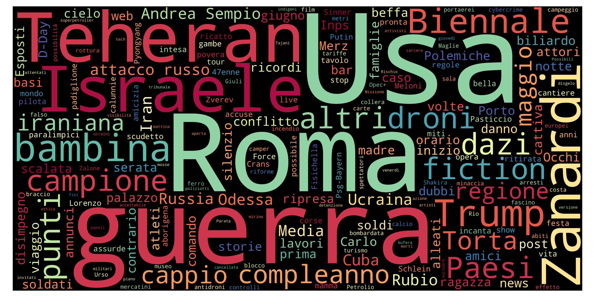
Top 10 unigrams
| Term | Frequency |
|---|---|
| roma | 8 |
| usa | 8 |
| iran | 7 |
| maggio | 6 |
| israele | 6 |
| nave | 5 |
| guerra | 5 |
| giorno | 4 |
| papa | 4 |
| cappio | 4 |
Top 10 phrases
| Term | Frequency |
|---|---|
| marco rubio | 3 |
| altri giorni | 2 |
| andrea sempio | 2 |
| ben gvir | 2 |
| serie turno | 2 |
| serie a | 2 |
Top 10 new terms (not present on previous day)
| Term | Current day frequency |
|---|---|
| roma | 8 |
| maggio | 6 |
| nave | 5 |
| cappio | 4 |
| gaza | 4 |
| biennale | 4 |
| papa | 4 |
| palestinese | 3 |
| inaccettabile | 3 |
| rubio | 3 |
Top 10 increasing terms (vs previous day)
| Term | Difference | Current day frequency | Previous day frequency |
|---|---|---|---|
| giorno | 3 | 4 | 1 |
| israele | 2 | 6 | 4 |
| europeo | 2 | 3 | 1 |
| caso | 2 | 3 | 1 |
| proposta | 1 | 3 | 2 |
| ucraina | 1 | 2 | 1 |
| teheran | 1 | 3 | 2 |
| arresto | 1 | 2 | 1 |
| morto | 1 | 3 | 2 |
| attivista | 1 | 3 | 2 |
Top 10 decreasing terms (vs previous day)
| Term | Difference | Current day frequency | Previous day frequency |
|---|---|---|---|
| trump | -11 | 2 | 13 |
| meloni | -5 | 1 | 6 |
| controllo | -2 | 1 | 3 |
| presidente | -2 | 2 | 4 |
| cuba | -2 | 2 | 4 |
| anno | -2 | 3 | 5 |
| soldato | -2 | 1 | 3 |
| putin | -2 | 1 | 3 |
| piazza | -1 | 1 | 2 |
| ritardo | -1 | 1 | 2 |
🇬🇧 UK — 03 May 2026
Updated: 12 May 2026, 00:14 CESTWordcloud
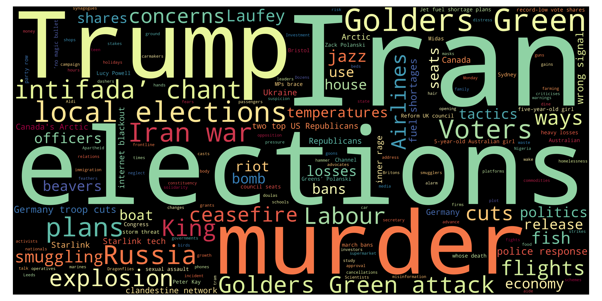
Top 10 unigrams
| Term | Frequency |
|---|---|
| iran | 10 |
| trump | 8 |
| ukraine | 7 |
| talk | 6 |
| channel | 5 |
| polanski | 4 |
| airline | 4 |
| explosion | 4 |
| murder | 4 |
| russia | 4 |
Top 10 phrases
| Term | Frequency |
|---|---|
| golders green | 6 |
| iran war | 4 |
| old girl | 4 |
| sir alex ferguson | 3 |
| alex ferguson | 3 |
| peace proposal | 2 |
| golders green attack | 2 |
| bn eu loan scheme | 2 |
| germany troop cuts | 2 |
| wrong signal | 2 |
Top 10 new terms (not present on previous day)
| Term | Current day frequency |
|---|---|
| ukraine | 7 |
| talk | 6 |
| golders green | 6 |
| channel | 5 |
| explosion | 4 |
| polanski | 4 |
| old girl | 4 |
| murder | 4 |
| london | 4 |
| russia | 4 |
Top 10 increasing terms (vs previous day)
| Term | Difference | Current day frequency | Previous day frequency |
|---|---|---|---|
| trump | 6 | 8 | 2 |
| iran | 4 | 10 | 6 |
| airline | 3 | 4 | 1 |
| iran war | 2 | 4 | 2 |
| plan | 2 | 3 | 1 |
| row | 2 | 3 | 1 |
| flight | 1 | 2 | 1 |
| jar | 1 | 2 | 1 |
| election | 1 | 3 | 2 |
| shortage | 1 | 2 | 1 |
Top 10 decreasing terms (vs previous day)
| Term | Difference | Current day frequency | Previous day frequency |
|---|---|---|---|
| march | -4 | 1 | 5 |
| firm | -3 | 1 | 4 |
| family | -2 | 2 | 4 |
| peter kay | -2 | 2 | 4 |
| bomb | -2 | 2 | 4 |
| germany | -2 | 3 | 5 |
| teen | -1 | 1 | 2 |
| labour | -1 | 2 | 3 |
| tory | -1 | 1 | 2 |
| drive | -1 | 1 | 2 |
🇮🇹 Italy — 02 May 2026
Updated: 12 May 2026, 00:14 CESTWordcloud
Top 10 unigrams
| Term | Frequency |
|---|---|
| trump | 13 |
| usa | 8 |
| iran | 8 |
| meloni | 6 |
| guerra | 5 |
| anno | 5 |
| presidente | 4 |
| longevo | 4 |
| governo | 4 |
| israele | 4 |
Top 10 phrases
| Term | Frequency |
|---|---|
| alex zanardi | 4 |
| stati uniti | 2 |
| primo maggio | 2 |
| pena esemplare | 2 |
Top 10 new terms (not present on previous day)
| Term | Current day frequency |
|---|---|
| meloni | 6 |
| germania | 4 |
| alex zanardi | 4 |
| cuba | 4 |
| libano | 3 |
| ricorso | 3 |
| putin | 3 |
| soldato | 3 |
| stati uniti | 2 |
| paese | 2 |
Top 10 increasing terms (vs previous day)
| Term | Difference | Current day frequency | Previous day frequency |
|---|---|---|---|
| usa | 6 | 8 | 2 |
| anno | 3 | 5 | 2 |
| longevo | 3 | 4 | 1 |
| presidente | 2 | 4 | 2 |
| controllo | 2 | 3 | 1 |
| notizia | 1 | 2 | 1 |
| governo | 1 | 4 | 3 |
| morto | 1 | 2 | 1 |
| treno | 1 | 2 | 1 |
| morte | 1 | 2 | 1 |
Top 10 decreasing terms (vs previous day)
| Term | Difference | Current day frequency | Previous day frequency |
|---|---|---|---|
| lavoro | -7 | 1 | 8 |
| flotilla | -4 | 3 | 7 |
| attivista | -4 | 2 | 6 |
| primo maggio | -3 | 2 | 5 |
| trump | -3 | 13 | 16 |
| guerra | -2 | 5 | 7 |
| torino | -2 | 1 | 3 |
| conflitto | -2 | 1 | 3 |
| accordo | -2 | 1 | 3 |
| minetti | -2 | 1 | 3 |
🇬🇧 UK — 02 May 2026
Updated: 12 May 2026, 00:14 CESTWordcloud
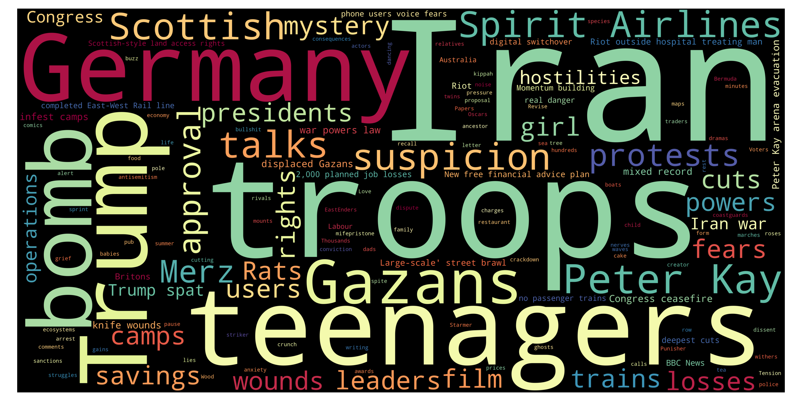
Top 10 unigrams
| Term | Frequency |
|---|---|
| starmer | 7 |
| iran | 6 |
| march | 5 |
| germany | 5 |
| protest | 4 |
| troop | 4 |
| bomb | 4 |
| family | 4 |
| firm | 4 |
| sanction | 4 |
Top 10 phrases
| Term | Frequency |
|---|---|
| pro palestine | 5 |
| peter kay | 4 |
| bloody sunday | 4 |
| bloody sunday footage | 4 |
| pro palestine marches | 4 |
| dead bodies | 3 |
| personal phones | 3 |
| pro palestinian | 2 |
| next elections | 2 |
| displaced gazans | 2 |
Top 10 new terms (not present on previous day)
| Term | Current day frequency |
|---|---|
| pro palestine | 5 |
| germany | 5 |
| brixton | 4 |
| bomb | 4 |
| pro palestine marches | 4 |
| firm | 4 |
| protest | 4 |
| family | 4 |
| photo | 3 |
| post | 3 |
Top 10 increasing terms (vs previous day)
| Term | Difference | Current day frequency | Previous day frequency |
|---|---|---|---|
| starmer | 4 | 7 | 3 |
| march | 3 | 5 | 2 |
| sanction | 3 | 4 | 1 |
| letter | 2 | 3 | 1 |
| bloody sunday footage | 2 | 4 | 2 |
| bloody sunday | 2 | 4 | 2 |
| troop | 2 | 4 | 2 |
| body | 2 | 3 | 1 |
| vehicle | 1 | 2 | 1 |
| strike | 1 | 2 | 1 |
Top 10 decreasing terms (vs previous day)
| Term | Difference | Current day frequency | Previous day frequency |
|---|---|---|---|
| iran | -8 | 6 | 14 |
| trump | -6 | 2 | 8 |
| plan | -6 | 1 | 7 |
| iran war | -5 | 2 | 7 |
| israeli | -5 | 2 | 7 |
| time | -3 | 2 | 5 |
| labour | -2 | 3 | 5 |
| girl | -2 | 2 | 4 |
| ally | -2 | 1 | 3 |
| child | -2 | 1 | 3 |
🇮🇹 Italy — 01 May 2026
Updated: 12 May 2026, 00:14 CESTWordcloud
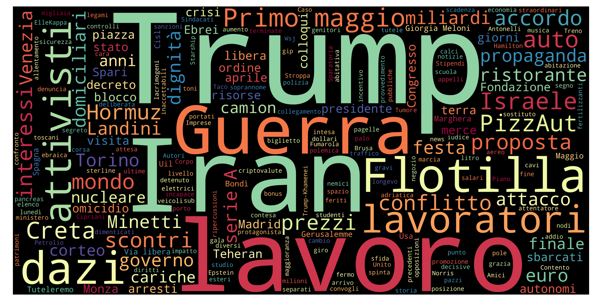
Top 10 unigrams
| Term | Frequency |
|---|---|
| trump | 16 |
| iran | 9 |
| lavoro | 8 |
| guerra | 7 |
| flotilla | 7 |
| dazio | 6 |
| lavoratore | 6 |
| attivista | 6 |
| auto | 4 |
| pizzaut | 4 |
Top 10 phrases
| Term | Frequency |
|---|---|
| primo maggio | 5 |
| serie a | 3 |
| giorgia meloni | 2 |
| via libera | 2 |
Top 10 new terms (not present on previous day)
| Term | Current day frequency |
|---|---|
| lavoratore | 6 |
| dazio | 6 |
| primo maggio | 5 |
| creta | 4 |
| pizzaut | 4 |
| auto | 4 |
| serie a | 3 |
| dignità | 3 |
| landini | 3 |
| scontro | 3 |
Top 10 increasing terms (vs previous day)
| Term | Difference | Current day frequency | Previous day frequency |
|---|---|---|---|
| trump | 10 | 16 | 6 |
| guerra | 6 | 7 | 1 |
| iran | 3 | 9 | 6 |
| lavoro | 3 | 8 | 5 |
| euro | 2 | 3 | 1 |
| prezzo | 2 | 3 | 1 |
| conflitto | 2 | 3 | 1 |
| mondo | 2 | 3 | 1 |
| presidente | 1 | 2 | 1 |
| miliardo | 1 | 3 | 2 |
Top 10 decreasing terms (vs previous day)
| Term | Difference | Current day frequency | Previous day frequency |
|---|---|---|---|
| flotilla | -9 | 7 | 16 |
| anno | -6 | 2 | 8 |
| caso | -6 | 1 | 7 |
| minetti | -6 | 3 | 9 |
| israele | -5 | 4 | 9 |
| usa | -4 | 2 | 6 |
| libero | -3 | 2 | 5 |
| governo | -3 | 3 | 6 |
| maggio | -2 | 2 | 4 |
| aprile | -1 | 2 | 3 |
🇬🇧 UK — 01 May 2026
Updated: 12 May 2026, 00:14 CESTWordcloud
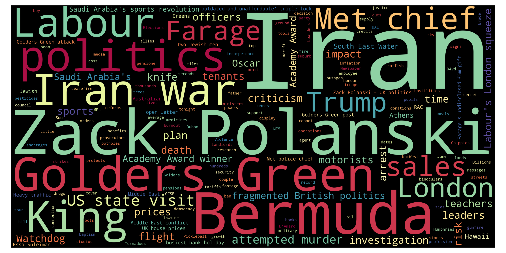
Top 10 unigrams
| Term | Frequency |
|---|---|
| iran | 14 |
| tariff | 8 |
| trump | 8 |
| plan | 7 |
| london | 7 |
| israeli | 7 |
| death | 6 |
| time | 5 |
| labour | 5 |
| apologise | 4 |
Top 10 phrases
| Term | Frequency |
|---|---|
| golders green | 9 |
| iran war | 7 |
| peter kay | 4 |
| superdry co | 4 |
| trans activist phone | 4 |
| father ted co | 3 |
| creator conviction | 3 |
| donald trump | 3 |
| police station | 3 |
| failed asylum seeker | 3 |
Top 10 new terms (not present on previous day)
| Term | Current day frequency |
|---|---|
| tariff | 8 |
| israeli | 7 |
| election | 4 |
| trans activist phone | 4 |
| superdry co | 4 |
| peter kay | 4 |
| girl | 4 |
| apologise | 4 |
| father ted co | 3 |
| police station | 3 |
Top 10 increasing terms (vs previous day)
| Term | Difference | Current day frequency | Previous day frequency |
|---|---|---|---|
| plan | 5 | 7 | 2 |
| death | 4 | 6 | 2 |
| iran war | 4 | 7 | 3 |
| time | 3 | 5 | 2 |
| trump | 2 | 8 | 6 |
| fuel | 2 | 3 | 1 |
| polanski | 1 | 2 | 1 |
| troop | 1 | 2 | 1 |
| pupil | 1 | 2 | 1 |
| march | 1 | 2 | 1 |
Top 10 decreasing terms (vs previous day)
| Term | Difference | Current day frequency | Previous day frequency |
|---|---|---|---|
| golders green | -15 | 9 | 24 |
| cost | -7 | 1 | 8 |
| golder | -3 | 1 | 4 |
| reform | -3 | 1 | 4 |
| rape | -2 | 2 | 4 |
| map | -2 | 1 | 3 |
| military | -2 | 1 | 3 |
| ww2 | -1 | 1 | 2 |
| strike | -1 | 1 | 2 |
| million | -1 | 1 | 2 |
🇮🇹 Italy — 30 Apr 2026
Updated: 12 May 2026, 00:14 CESTWordcloud
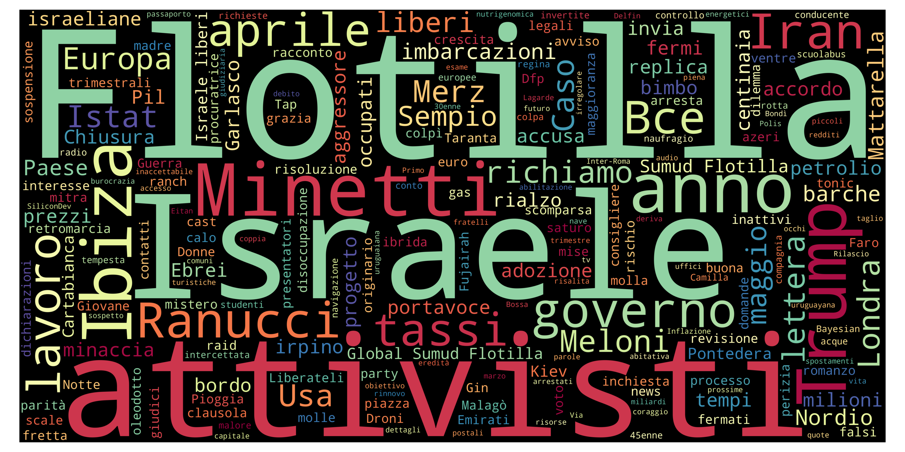
Top 10 unigrams
| Term | Frequency |
|---|---|
| flotilla | 16 |
| minetti | 9 |
| meloni | 9 |
| israele | 9 |
| anno | 8 |
| caso | 7 |
| attivista | 6 |
| governo | 6 |
| trump | 6 |
| usa | 6 |
Top 10 phrases
| Term | Frequency |
|---|---|
| mila alloggi | 2 |
| global sumud flotilla | 2 |
| sumud flotilla | 2 |
| israele liberi | 2 |
Top 10 new terms (not present on previous day)
| Term | Current day frequency |
|---|---|
| flotilla | 16 |
| israele | 9 |
| attivista | 6 |
| governo | 6 |
| ranucci | 5 |
| ibiza | 5 |
| lavoro | 5 |
| alloggio | 4 |
| richiamo | 4 |
| lettera | 4 |
Top 10 increasing terms (vs previous day)
| Term | Difference | Current day frequency | Previous day frequency |
|---|---|---|---|
| minetti | 6 | 9 | 3 |
| trump | 4 | 6 | 2 |
| meloni | 4 | 9 | 5 |
| anno | 3 | 8 | 5 |
| libero | 3 | 5 | 2 |
| caso | 3 | 7 | 4 |
| usa | 2 | 6 | 4 |
| tasso | 2 | 4 | 2 |
| energetico | 1 | 2 | 1 |
| obiettivo | 1 | 2 | 1 |
Top 10 decreasing terms (vs previous day)
| Term | Difference | Current day frequency | Previous day frequency |
|---|---|---|---|
| guerra | -3 | 1 | 4 |
| accusa | -2 | 1 | 3 |
| ebraico | -2 | 1 | 3 |
| processo | -2 | 1 | 3 |
| sospetto | -1 | 1 | 2 |
| israeliano | -1 | 1 | 2 |
| presidente | -1 | 1 | 2 |
| putin | -1 | 1 | 2 |
| teheran | -1 | 2 | 3 |
| londra | -1 | 5 | 6 |
🇬🇧 UK — 30 Apr 2026
Updated: 12 May 2026, 00:14 CESTWordcloud
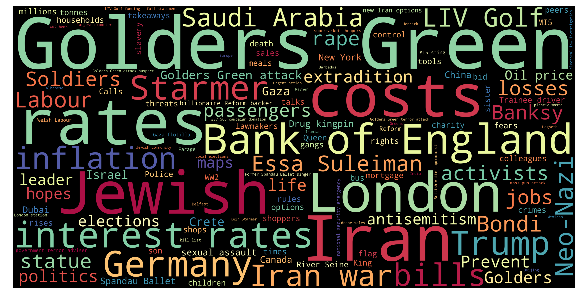
Top 10 unigrams
| Term | Frequency |
|---|---|
| iran | 13 |
| jewish | 12 |
| rate | 9 |
| cost | 8 |
| london | 8 |
| trump | 6 |
| antisemitism | 5 |
| rape | 4 |
| golder | 4 |
| prevent | 4 |
Top 10 phrases
| Term | Frequency |
|---|---|
| golders green | 24 |
| bank of england | 6 |
| golders green attack | 6 |
| interest rates | 5 |
| saudi arabia | 4 |
| liv golf | 4 |
| neo nazi | 4 |
| essa suleiman | 4 |
| golders green attack suspect | 4 |
| jewish pain | 4 |
Top 10 new terms (not present on previous day)
| Term | Current day frequency |
|---|---|
| cost | 8 |
| bank of england | 6 |
| neo nazi | 4 |
| liv golf | 4 |
| essa suleiman | 4 |
| bondi | 4 |
| germany | 4 |
| saudi arabia | 4 |
| labour | 4 |
| golders green attack suspect | 4 |
Top 10 increasing terms (vs previous day)
| Term | Difference | Current day frequency | Previous day frequency |
|---|---|---|---|
| golders green | 12 | 24 | 12 |
| rate | 7 | 9 | 2 |
| golders green attack | 4 | 6 | 2 |
| interest rates | 3 | 5 | 2 |
| jewish | 2 | 12 | 10 |
| antisemitism | 2 | 5 | 3 |
| london | 2 | 8 | 6 |
| map | 2 | 3 | 1 |
| soldier | 2 | 3 | 1 |
| call | 1 | 2 | 1 |
Top 10 decreasing terms (vs previous day)
| Term | Difference | Current day frequency | Previous day frequency |
|---|---|---|---|
| trump | -6 | 6 | 12 |
| russia | -5 | 2 | 7 |
| family | -3 | 1 | 4 |
| iran war | -3 | 3 | 6 |
| post | -3 | 1 | 4 |
| record | -3 | 1 | 4 |
| starmer | -2 | 4 | 6 |
| risk | -2 | 1 | 3 |
| fire | -1 | 1 | 2 |
| footage | -1 | 1 | 2 |
🇮🇹 Italy — 29 Apr 2026
Updated: 12 May 2026, 00:14 CESTWordcloud
Top 10 unigrams
| Term | Frequency |
|---|---|
| iran | 7 |
| londra | 6 |
| anno | 5 |
| maggio | 5 |
| meloni | 5 |
| guerra | 4 |
| caso | 4 |
| minore | 4 |
| usa | 4 |
| arresto | 3 |
Top 10 phrases
| Term | Frequency |
|---|---|
| crans montana | 4 |
| roma capitale | 4 |
| parte civile | 3 |
| palazzo chigi | 2 |
| gran bretagna | 2 |
| fbi comey | 2 |
| re carlo | 2 |
| carlo iii | 2 |
| giornata nazionale | 2 |
Top 10 new terms (not present on previous day)
| Term | Current day frequency |
|---|---|
| londra | 6 |
| meloni | 5 |
| anno | 5 |
| roma capitale | 4 |
| crans montana | 4 |
| minore | 4 |
| messaggio | 3 |
| 3 | |
| teheran | 3 |
| 3 |
Top 10 increasing terms (vs previous day)
| Term | Difference | Current day frequency | Previous day frequency |
|---|---|---|---|
| maggio | 4 | 5 | 1 |
| accusa | 2 | 3 | 1 |
| iran | 2 | 7 | 5 |
| usa | 2 | 4 | 2 |
| crisi | 2 | 3 | 1 |
| mano | 1 | 2 | 1 |
| putin | 1 | 2 | 1 |
| processo | 1 | 3 | 2 |
| immagine | 1 | 2 | 1 |
| adozione | 1 | 2 | 1 |
Top 10 decreasing terms (vs previous day)
| Term | Difference | Current day frequency | Previous day frequency |
|---|---|---|---|
| trump | -11 | 2 | 13 |
| caso | -5 | 4 | 9 |
| militare | -3 | 1 | 4 |
| mondo | -3 | 1 | 4 |
| melania | -3 | 1 | 4 |
| libero | -2 | 2 | 4 |
| stretto | -2 | 1 | 3 |
| morto | -2 | 1 | 3 |
| donna | -2 | 1 | 3 |
| re carlo | -1 | 2 | 3 |
🇬🇧 UK — 29 Apr 2026
Updated: 12 May 2026, 00:14 CESTWordcloud
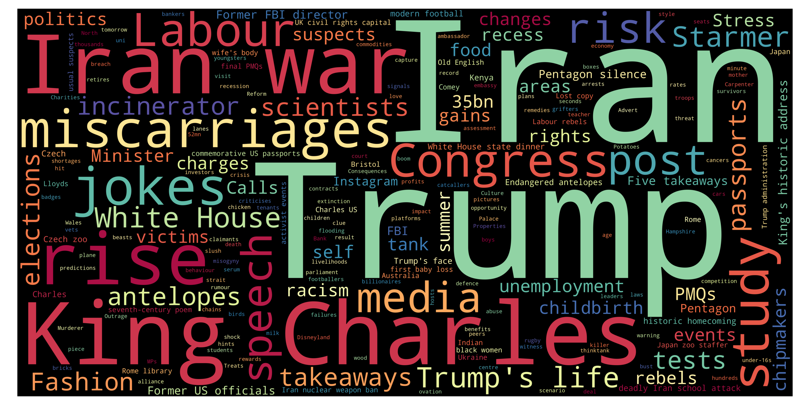
Top 10 unigrams
| Term | Frequency |
|---|---|
| iran | 13 |
| trump | 12 |
| jewish | 10 |
| russia | 7 |
| police | 6 |
| starmer | 6 |
| london | 6 |
| ukraine | 5 |
| post | 4 |
| threat | 4 |
Top 10 phrases
| Term | Frequency |
|---|---|
| golders green | 12 |
| king charles | 7 |
| iran war | 6 |
| white house | 5 |
| nigel farage | 5 |
| href https news sky com | 4 |
| oil price | 3 |
| trump life | 3 |
| stranded whale | 3 |
| jewish men | 3 |
Top 10 new terms (not present on previous day)
| Term | Current day frequency |
|---|---|
| golders green | 12 |
| jewish | 10 |
| police | 6 |
| ukraine | 5 |
| nigel farage | 5 |
| standard | 4 |
| family | 4 |
| reform | 4 |
| victim | 4 |
| post | 4 |
Top 10 increasing terms (vs previous day)
| Term | Difference | Current day frequency | Previous day frequency |
|---|---|---|---|
| russia | 5 | 7 | 2 |
| iran | 4 | 13 | 9 |
| london | 4 | 6 | 2 |
| king charles | 3 | 7 | 4 |
| trump | 3 | 12 | 9 |
| white house | 3 | 5 | 2 |
| record | 2 | 4 | 2 |
| risk | 2 | 3 | 1 |
| starmer | 2 | 6 | 4 |
| threat | 2 | 4 | 2 |
Top 10 decreasing terms (vs previous day)
| Term | Difference | Current day frequency | Previous day frequency |
|---|---|---|---|
| survivor | -4 | 1 | 5 |
| israel | -4 | 2 | 6 |
| uae | -4 | 1 | 5 |
| minister | -3 | 2 | 5 |
| america | -3 | 2 | 5 |
| mps | -3 | 1 | 4 |
| opec | -3 | 3 | 6 |
| medium | -2 | 2 | 4 |
| hormuz | -2 | 2 | 4 |
| russian | -2 | 3 | 5 |